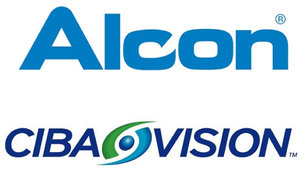
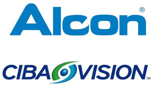

The Sheridan Eye Clinic is located in Mississauga on Erin Mills Parkway inside the Sheridan Centre next to LensCrafters.
This family-run small business has been operating for over 20 years and has a team of five optometrists, one optician, and a number of technicians dedicated to taking care of your eyes and answering your questions or concerns.
Some of the services we provide include: comprehensive eye examinations for the whole family, contact lens fitting and sales, and laser refractive surgery co-management. We use a number of other diagnostic instruments such as a retinal camera, a visual field analyzer, and an ocular coherence tomographer (OCT) to aid in the diagnosis of significant eye diseases such as diabetes, glaucoma, and macular degeneration.
We are open seven days a week with walk-in availability for your convenience. If you would like to book an appointment with one of our doctors of optometry, please contact us to schedule an appointment!
 
